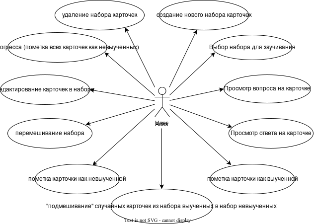
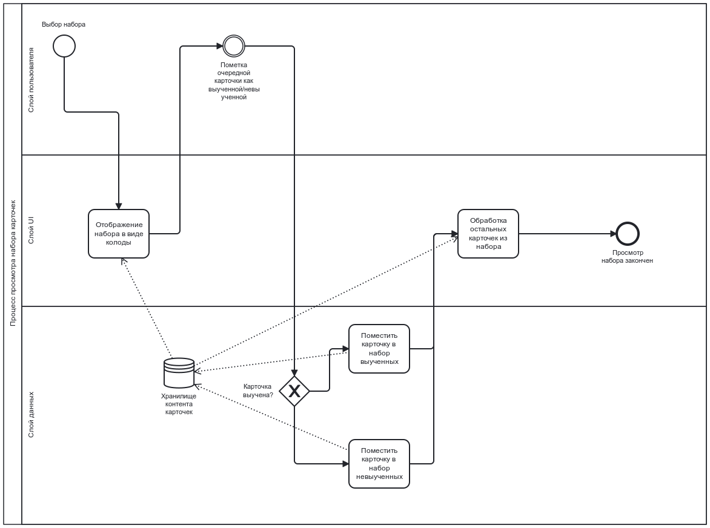
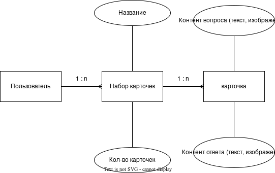
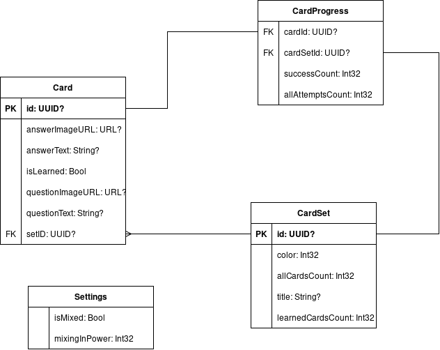
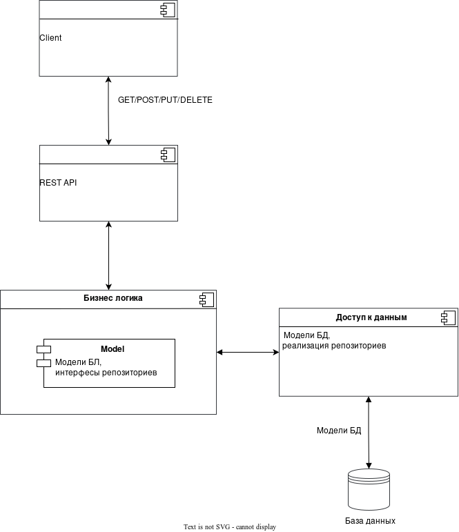
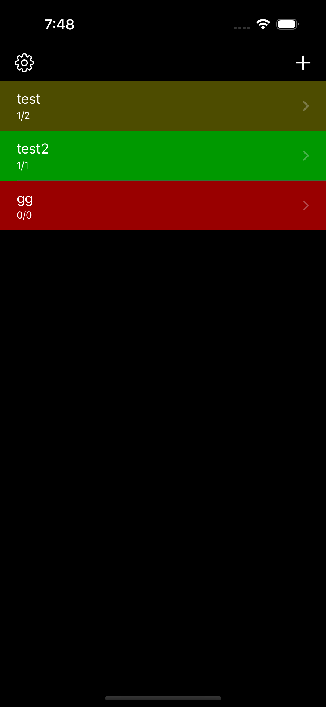
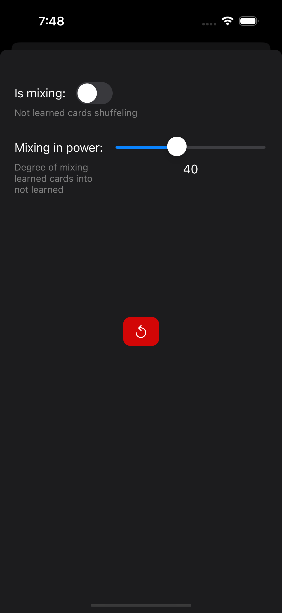
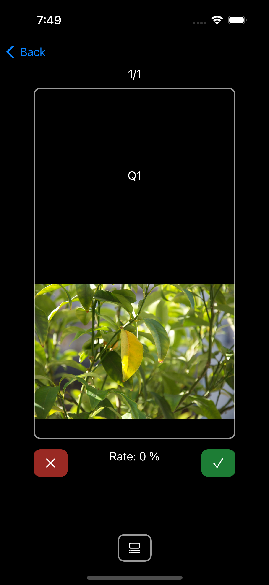
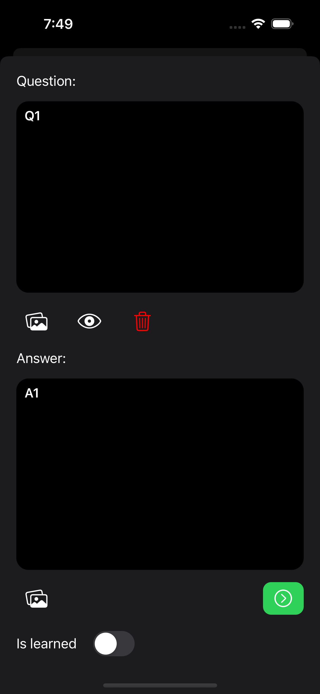

-
Цель: приложение Cards позволит ускорить процесс заучивания новой информации. Пользователь может создавать
наборы карточек для заучивания. Каждая карточка имеет две стороны - с вопросом и ответом.
-
Краткий перечень функциональных требований:
- создание/удаление/изменение набора карточек
- создание/удаление/изменение карточки в наборе
- пометка карточки как выученной/невыученной
- перемешивание карточек в наборе
- подмешивание выученных карточек в невыученные
-
Use-Case - диаграмма

- Формализация бизнес-правил

-
Пользовательские сценарии
- По нажатию кнопки "+" предлагается ввести наименование нового набора карточек и далее перейти в
режим добавления карточек для набора
- В режиме создания карточек пользоатель сначала заполняет сторону вопроса (вводит текст, добавляет
изображения), а затем сторону ответа
- Пользователь имеет таблицу с названиями наборов карточек и может выбрать один из них для
просмотра/редактирования/удаления
- В режиме заучивания пользователь сначала просматривает вопрос карточки, пытается вспомнить ответ и затем
проверяет себя (по нажатию на карточку показывается ответ)
- В зависимости от правильности ответа, пользователь помечает карточку как заученную или незаученную. После
этого карточка автоматически добавляется в соответсвющий набор (заученных или незаученных соответственно)
- Пользователь может перемешать карточки в наборе
- Пользователь может активировать "подмешивание" выученных карточек в набор невыученных с
настраивавемой "интенсивностью"
- Пользователь может переместить все карточки из заученного набора в незаученный, напрмер, для повторения
-
ER-диаграмма сущностей

- Диаграма БД

- Диаграма компонентов

- Экраны
Список наборов / настройки


Просмотр карточки / список карточек


Экран добавления / модификации карточки
